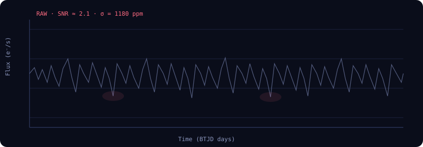
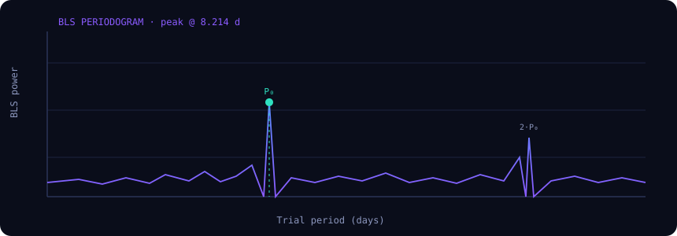

Target TIC 261136679 · Sector 41 · 120 s cadence



The flux series is normalised and detrended, then a Box Least Squares search evaluates a grid of trial periods, epochs and durations. The period that maximises the BLS power is adopted, and the signal-to-noise ratio is computed from the fitted depth relative to the scatter of the out-of-transit baseline. A low false-alarm probability and a coherent, repeating dip are required before a candidate proceeds to classification.